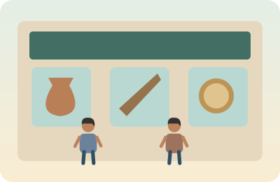

अवलोकन और अनुभव
Observation and experience
Audio uses your device’s Hindi voice; availability varies. No native recordings included.आज का नियम
Understand the conceptयात्रा लेख में अपने अनुभव और सत्यापित जानकारी अलग रखें। काल्पनिक विवरण को वास्तविक यात्रा का प्रमाण न बताएं।
शब्द और अर्थ
Vocabularyउदाहरण और पठन
Examples & readingसंग्रहालय में पुराने बर्तन देखे।
मार्गदर्शक ने उनका उपयोग बताया।
मैंने अपनी डायरी में कुछ प्रश्न लिखे।
यात्रा ने इतिहास के प्रति उत्सुकता बढ़ाई।
विस्तृत पठन
Extended reading
एक दिन संग्रहालय में
हम शनिवार को नगर के संग्रहालय गए। प्रवेश के पास एक नक्शा लगा था, जिसकी सहायता से हमने देखने का क्रम तय किया। सबसे पहले मिट्टी के पुराने बर्तन देखे। उनके पास लिखे परिचय से हमें उनके उपयोग के बारे में पता चला। आगे एक कक्ष में कपड़े और औज़ार रखे थे। कुछ वस्तुओं के बारे में हमें प्रश्न थे, इसलिए हमने मार्गदर्शक से पूछा। लौटते समय मैंने डायरी में अपने अवलोकन और नए प्रश्न अलग-अलग लिखे। यह यात्रा मेरे लिए केवल घूमना नहीं, सीखने का अवसर भी थी।
पठन-बोध
नक्शे का उपयोग किसलिए किया गया?
देखने का क्रम तय करने के लिए।
लेखक ने प्रश्न किससे पूछे?
मार्गदर्शक से।
लेखक ने अवलोकन और प्रश्न अलग क्यों लिखे?
जानी हुई और जानने योग्य बातों का अंतर बनाए रखने के लिए।
बोलें और सोचें
Apply itकिसी वास्तविक या काल्पनिक यात्रा का 100 शब्दों का वृत्तांत लिखें और उसे उचित रूप से पहचान दें।
लेखन अभ्यास
Writing practiceउदाहरण को आधार बनाकर अपने स्वतंत्र वाक्य या अनुच्छेद लिखें।
अपना ज्ञान जाँचें
Check your learningयात्री ने डायरी में क्या लिखा?
उत्तर देखें
कुछ प्रश्न।
इस पाठ में दिए गए अर्थ से शब्द मिलाएँ: monument
उत्तर
स्मारक
Completion is self-marked and saved locally.